ابن دقيق العيد
Author
· d. 702 AH
About the author
ابن دقيق العيد (٦٢٥ - ٧٠٢ هـ = ١٢٢٨ - ١٣٠٢ م)
محمد بن علي بن وهب بن مطيع، أبو الفتح، تقي الدين القشيري، المعروف كأبيه وجده بابن دقيق العيد:
• قاض، من أكابر العلماء بالأصول، مجتهد.
• أصل أبيه من منفلوط (بمصر) انتقل إلى قوص، وولد له صاحب الترجمة في ينبع (على ساحل البحر الأحمر) فنشأ بقوص، وتعلم بدمشق والإسكندرية ثم بالقاهرة. وولي قضاء الديار المصرية سنة ٦٩٥ هـ، فاستمر إلى أن توفي (بالقاهرة).
له تصانيف، منها:
• (إحكام الأحكام - ط) مجلدان، في الحديث
• (الإلمام بأحاديث الأحكام - ط) صغير
• (الإمام في شرح الإلمام - خ) الجزء الأول منه، في الأزهرية، من نحو ٢٠ جزءا، ويقال إنه لم يتمه [ثم طُبع]
• (الاقتراح في بيان الاصطلاح - خ) [ثم طُبع]
• (تحفة اللبيب في شرح التقريب - ط)
• (شرح الأربعين حديثا للنووي - خ) [ثم طُبع]
• (اقتناص السوانح) فوائد ومباحث مختلفة
• (شرح مقدمة المطرزي) في أصول الفقه
• كتاب في (أصول الدين).
وكان مع غزارة علمه، ظريفا، له أشعار وملح وأخبار
نقلا عن: «الأعلام» للزركلي [بزيادات بين معكوفات]
- أربعون حديثا تساعية الإسناد
- إحكام الأحكام شرح عمدة الأحكام
- الإلمام بأحاديث الأحكام
- الإلمام بأحاديث الأحكام - ومعه حاشية ابن عبد الهادي
- الاقتراح في بيان الاصطلاح
- شرح الأربعين النووية لابن دقيق العيد
- شرح الإلمام بأحاديث الأحكام
Books
|
Book
|
Pages
|
|---|---|
| شرح الأربعين النووية لابن دقيق العيد | 129 |
Resources
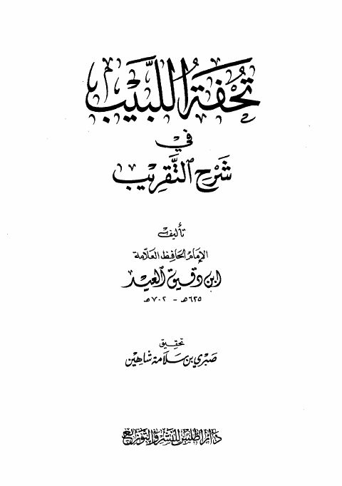
تحفة اللبيب في شرح التقريب تحفة اللبيب في شرح التقريب ابن دقيق العيد شرح الأربعين النووية في الأحاديث الصحيحة النبوية- دار ابن حزم
شرح الأربعين النووية في الأحاديث الصحيحة النبوية- دار ابن حزم
يحيى بن شرف النووي
شرح الأربعين النووية في الأحاديث الصحيحة النبوية- دار ابن حزم
شرح الأربعين النووية في الأحاديث الصحيحة النبوية- دار ابن حزم
يحيى بن شرف النووي
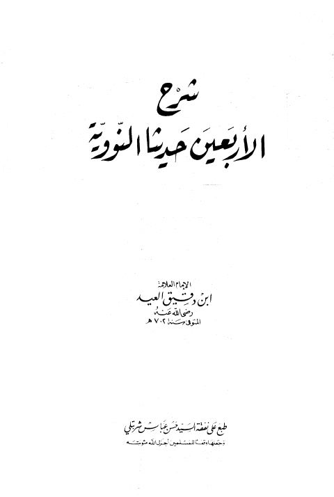
شرح الأربعين حديثًًا النووية شرح الأربعين حديثًًا النووية ابن دقيق العيد الرياض الندية في شرح الأربعين النووية
الرياض الندية في شرح الأربعين النووية
يحيى بن شرف النووي • ابن دقيق العيد • محمد بن صالح العثيمين
الرياض الندية في شرح الأربعين النووية
الرياض الندية في شرح الأربعين النووية
يحيى بن شرف النووي • ابن دقيق العيد • محمد بن صالح العثيمين
 الدرر البهية في شرح الأربعين النووية
الدرر البهية في شرح الأربعين النووية
يحيى بن شرف النووي • ابن دقيق العيد • محمد بن صالح العثيمين
الدرر البهية في شرح الأربعين النووية
الدرر البهية في شرح الأربعين النووية
يحيى بن شرف النووي • ابن دقيق العيد • محمد بن صالح العثيمين
 إحكام الاحكام شرح عمدة الأحكام- ت شاكر
إحكام الاحكام شرح عمدة الأحكام- ت شاكر
تقي الدين بن دقيق العيد
إحكام الاحكام شرح عمدة الأحكام- ت شاكر
إحكام الاحكام شرح عمدة الأحكام- ت شاكر
تقي الدين بن دقيق العيد
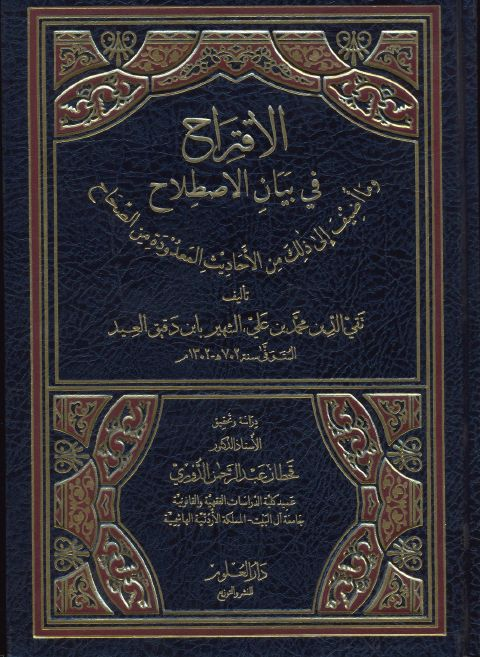
الاقتراح في بيان الإصلاح وما أضيف إلى ذلك من الأحاديث المعدودة من الصحاح الاقتراح في بيان الإصلاح وما أضيف إلى ذلك من الأحاديث المعدودة من الصحاح تقي الدين ابن دقيق العيد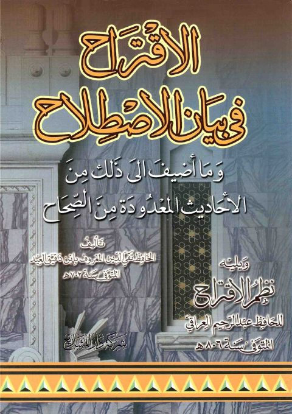
الاقتراح في بيان الإصلاح وما أضيف إلى ذلك من الأحاديث المعدودة من الصحاح ويليه نظم الاقتراح لعبد الرحيم العراقي الاقتراح في بيان الإصلاح وما أضيف إلى ذلك من الأحاديث المعدودة من الصحاح ويليه نظم الاقتراح لعبد الرحيم العراقي تقي الدين ابن دقيق العيد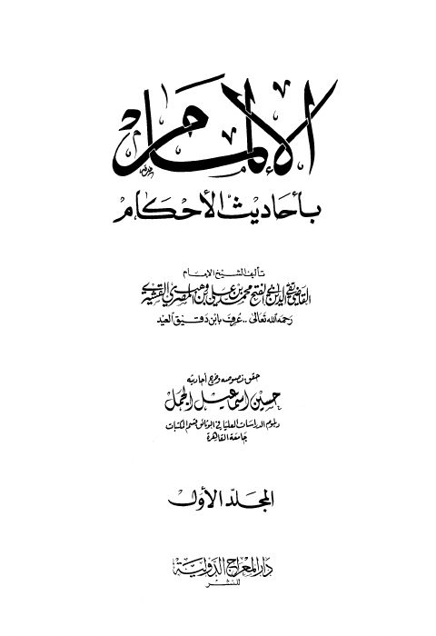
الإلمام بأحاديث الأحكام- ت الجمل الإلمام بأحاديث الأحكام- ت الجمل تقي الدين ابن دقيق العيد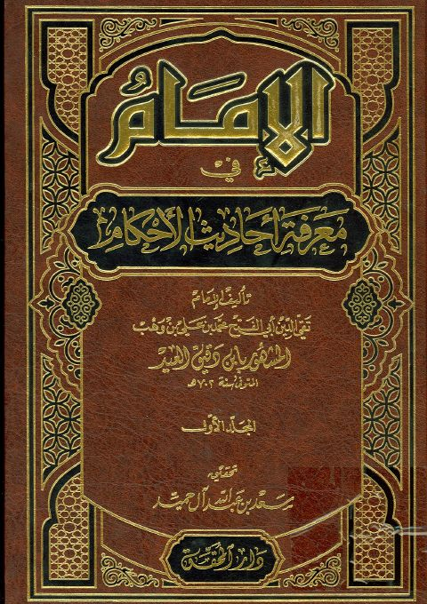
الإمام في معرفة أحاديث الأحكام الإمام في معرفة أحاديث الأحكام تقي الدين ابن دقيق العيد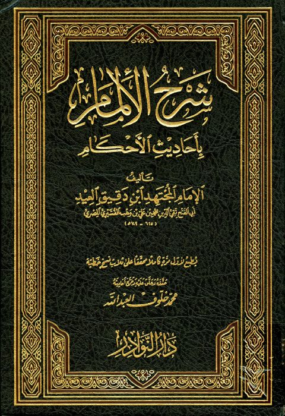
شرح الإلمام بأحاديث الأحكام شرح الإلمام بأحاديث الأحكام تقي الدين بن دقيق العيد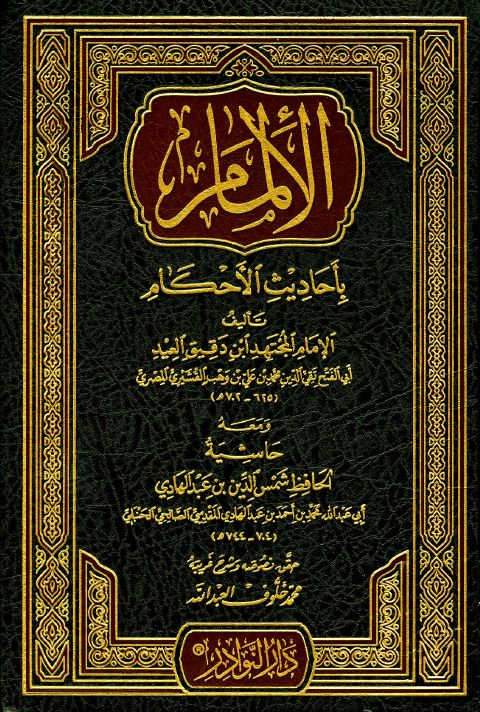
الإلمام بأحاديث الأحكام مع حاشية ابن عبد الهادي الإلمام بأحاديث الأحكام مع حاشية ابن عبد الهادي تقي الدين ابن دقيق العيد شرح الإلمام بأحاديث الأحكام المجلدة الثانية- ت. السعيد
شرح الإلمام بأحاديث الأحكام المجلدة الثانية- ت. السعيد
تقي الدين ابن دقيق العيد
شرح الإلمام بأحاديث الأحكام المجلدة الثانية- ت. السعيد
شرح الإلمام بأحاديث الأحكام المجلدة الثانية- ت. السعيد
تقي الدين ابن دقيق العيد
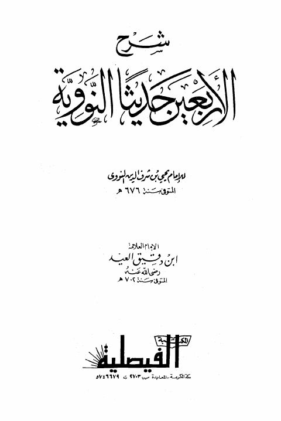
شرح الأربعين حديثًا النووية للإمام النووي- ط. الفيصلية شرح الأربعين حديثًا النووية للإمام النووي- ط. الفيصلية تقي الدين ابن دقيق العيد الاقتراح في بيان الإصلاح وما أضيف إلى ذلك من الأحاديث المعدودة من الصحاح
الاقتراح في بيان الإصلاح وما أضيف إلى ذلك من الأحاديث المعدودة من الصحاح
تقي الدين بن دقيق العيد
الاقتراح في بيان الإصلاح وما أضيف إلى ذلك من الأحاديث المعدودة من الصحاح
الاقتراح في بيان الإصلاح وما أضيف إلى ذلك من الأحاديث المعدودة من الصحاح
تقي الدين بن دقيق العيد
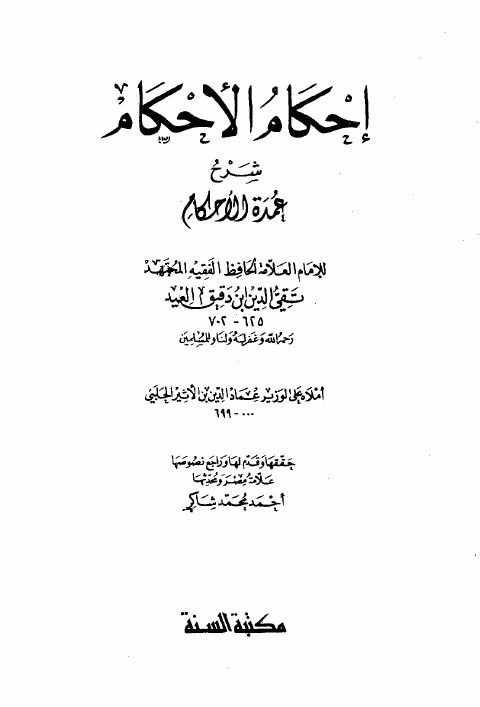
إحكام الأحكام شرح عمدة الأحكام إحكام الأحكام شرح عمدة الأحكام تقي الدين ابن دقيق العيد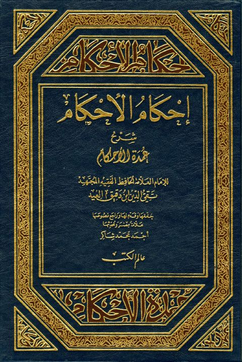
إحكام الأحكام شرح عمدة الأحكام أملاه على الوزير عماد الدين بن الأثير الحلبي إحكام الأحكام شرح عمدة الأحكام أملاه على الوزير عماد الدين بن الأثير الحلبي تقي الدين ابن دقيق العيد الجامع في شرح الأربعين النووية
الجامع في شرح الأربعين النووية
يحيى بن شرف النووي • ابن دقيق العيد • عبد الرحمن السعدي • محمد صالح العثيمين • صالح آل الشيخ
الجامع في شرح الأربعين النووية
الجامع في شرح الأربعين النووية
يحيى بن شرف النووي • ابن دقيق العيد • عبد الرحمن السعدي • محمد صالح العثيمين • صالح آل الشيخ